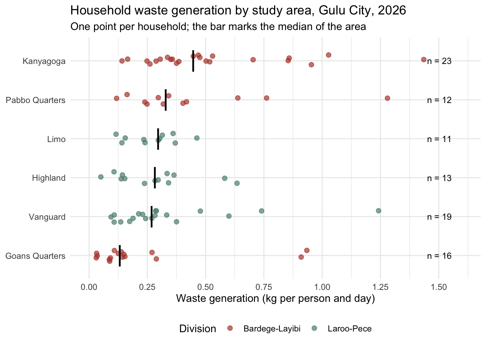

The goal of guluswm is to provide the field data of a household solid waste study in Gulu City, northern Uganda, as tidy data. The study combined a socio-economic household survey of 424 households in six areas of the city’s two divisions, conducted face to face with the mWater platform from 23 to 26 September 2026, with a seven day waste characterisation study in which the waste of 95 households was weighed and sorted into 16 fractions on 1 to 3 October 2026. The data were collected by Ivan Feni, Abubakar Batte, James Omal and Charles B. Niwagaba of Makerere University, the University of Stuttgart and Gulu City Council for a manuscript in preparation, and shared with openwashdata for publication under the CC BY 4.0 licence.
Draft. This package is not released and has no DOI. The authors are reviewing the package and answering the questions tracked in the repository’s issues; the data may still change.
Installation
You can install the development version of guluswm from GitHub with:
# install.packages("devtools")
devtools::install_github("openwashdata/guluswm")
## Run the following code in console if you don't have the packages
## install.packages(c("dplyr", "knitr", "readr", "stringr", "gt", "kableExtra"))
library(dplyr)
library(knitr)
library(readr)
library(stringr)
library(gt)
library(kableExtra)Alternatively, you can download the individual datasets as a CSV or XLSX file from the table below.
- Click Download CSV. A window opens that displays the CSV in your browser.
- Right-click anywhere inside the window and select “Save Page As…”.
- Save the file in a folder of your choice.
| dataset | CSV | XLSX |
|---|---|---|
| guluswm_survey | Download CSV | Download XLSX |
| guluswm_waste | Download CSV | Download XLSX |
Data
The package provides access to two data objects. guluswm_survey holds one row per household interviewed in the household survey, and guluswm_waste one row per household in the waste characterisation study. The two studies were run by separate field teams in the same six areas, and their households cannot be linked.
guluswm_survey
The dataset guluswm_survey contains data about the interviewed households: household size, the education and livelihood of the household head, income and expenditure bands, housing and utilities, the types of waste generated, how waste is stored and disposed of, who collects it, how the collection service is rated, whether the household pays for collection and how much, whether it is willing to pay for an improved service and at what amount, and its awareness of by-laws. It has 424 observations and 43 variables
guluswm_survey |>
head(3) |>
gt::gt() |>
gt::as_raw_html()| household_id | enumerator | survey_date | area | division | household_size | respondent_is_head | education_head | livelihood | income_band | income_class | expenditure_band | wall_material | roof_material | piped_water | electricity | waste_types | disposal_container | disposal_method | waste_collector | preferred_frequency | preferred_time | service_reliable | irregular_collection_problem | enough_collection_points | distance_disposal_point | pays_for_collection | current_fee_band | current_fee_rating | payment_channel | payment_schedule | willing_to_pay | reason_willing | reason_not_willing | wtp_band | preferred_payment_structure | participates_cleanups | ever_complained | complained_to | receives_swm_information | aware_of_bylaws | swm_challenges | improvement_themes |
|---|---|---|---|---|---|---|---|---|---|---|---|---|---|---|---|---|---|---|---|---|---|---|---|---|---|---|---|---|---|---|---|---|---|---|---|---|---|---|---|---|---|---|
For an overview of the variable names, see the following table.
| variable_name | variable_type | description |
|---|---|---|
| household_id | character | Identifier of the interviewed household as assigned by the study team: two letters for the enumerator, the survey month (2309 for September 2026) and a running number, for example AC-2309-001. |
| enumerator | character | Code of the enumerator who conducted the interview, E1 to E5; the codes replace the mWater user names and are shared with guluswm_waste. |
| survey_date | Date | Date of the interview, between 23 and 26 September 2026. |
| area | character | Study area in which the household lives: Limo, Vanguard or Highland (Laroo-Pece Division), Kanyagoga, Pabbo Quarters or Goans Quarters (Bardege-Layibi Division). The raw file spells Pabbo Quarters as Pabwo Quarters in this sheet. |
| division | character | Administrative division of Gulu City in which the household lives: Bardege-Layibi or Laroo-Pece. |
| household_size | integer | Number of people living in the household. |
| respondent_is_head | character | Whether the respondent is the head of the household (Yes or No). |
| education_head | factor | Highest level of education of the household head, in rising order: None, Primary, Secondary, Tertiary/vocational, University and above. |
| livelihood | character | Main source of livelihood of the household: Trading/business, Casual labour, Salaried employment, Remittances/Donations or Other. |
| income_band | factor | Monthly household income in Ugandan shillings, in six bands from None/no regular income to Above UGX 1,000,000. |
| income_class | factor | Income class derived from income_band: Low (no regular income or below UGX 300,000), Middle (UGX 300,000 to 600,000) or High (above UGX 600,000). |
| expenditure_band | factor | Monthly household expenditure on basic needs in Ugandan shillings, in five bands from Below UGX 100,000 to Above UGX 1,000,000. |
| wall_material | character | Main material of the walls of the dwelling: Mud/wattle, Unburnt bricks, Burnt bricks unplastered, Burnt bricks plastered or Other. |
| roof_material | character | Main material of the roof of the dwelling: Grass thatch, Iron sheets (old/rusted), Iron sheets (new) or Tiles/permanent. |
| piped_water | character | Whether the household has access to piped water (Yes or No). |
| electricity | character | Whether the household has access to electricity (Yes or No). |
| waste_types | character | Types of waste the household generates, as named by the respondent: Food preparation waste, Food leftovers, Plastic, Paper, Glass or Other; several answers are separated by a semicolon. |
| disposal_container | character | Container in which the household stores its waste before disposal: Kavera (a polyethylene bag), Sack, Bucket or Bag; several answers are separated by a semicolon. |
| disposal_method | character | How the household disposes of its waste: Burning, Collected by service provider, Taken to collection point/skip, Backyard dumping, Rubbish pit, Roadside dumping, Open drain, Burying, Garden/compost or Other; several answers are separated by a semicolon. |
| waste_collector | character | Who collects the household’s waste: City/Division Council, Private Operator, Informal Collector, Community Group, Self (household), No one or Other; asked of households with a collection arrangement. |
| preferred_frequency | character | Collection frequency the household would prefer: Daily, More than once a week, Three times a week, Twice a week, Weekly, Collection points every month or Other. |
| preferred_time | character | Time of day the household considers best for collection: Morning, Day time, Evening, No specific time or Other. |
| service_reliable | character | Whether the household considers its collection service reliable (Yes or No); asked of households with a service. |
| irregular_collection_problem | character | Main problem the household experiences from irregular collection: Dirty neighborhood, Unhealthy environment, Spread of diseases, Bad reputation of the area or Other; asked of households that call their service unreliable. |
| enough_collection_points | character | Whether the household considers the number of skips or collection points in its area enough (Yes or No). |
| distance_disposal_point | factor | Distance from the household to the nearest disposal point, in bands: Less than 50 Metres, 50 - 100 Metres, 200 - 300 Metres or More than 500 Metres. |
| pays_for_collection | character | Whether the household pays for waste collection (Yes or No). |
| current_fee_band | factor | Monthly fee the household pays for collection in Ugandan shillings, in five bands from Below UGX 1,000 to UGX 15,000 and above; asked of paying households. |
| current_fee_rating | factor | How the household rates the fee it pays: Affordable, Manageable or Expensive; asked of paying households. |
| payment_channel | character | How the household pays for collection: Direct to City/Division Council, Through the landlord or Other. |
| payment_schedule | character | How often the household pays for collection: Daily, Whenever collected, Bi-weekly or Monthly. |
| willing_to_pay | character | Whether the household is willing to pay for an improved and regular collection service, or to pay more than now if it pays already (Yes or No). |
| reason_willing | character | Main reason for being willing to pay: Desire for a cleaner environment, Reduced risk of disease, Convenience/saves time, Improves property value or Other. |
| reason_not_willing | character | Main reason for not being willing to pay: Income is too low/irregular, Government/City should bear the cost, Already pay enough / rent includes it, Current service is unreliable so won’t pay more, or Other. |
| wtp_band | factor | Monthly amount the household is willing to pay in Ugandan shillings, in five bands from Below UGX 1,000 to UGX 15,000 and above; asked of willing households. |
| preferred_payment_structure | character | Payment structure the household prefers: Flat monthly fee, Pay-per-visit/per-collection, Pay-per-bag/per-bin collected, Included in property rent/rates or No preference. |
| participates_cleanups | character | Whether the household takes part in community clean-up exercises (Yes or No). |
| ever_complained | character | Whether the household has ever complained about solid waste management (Yes or No). |
| complained_to | character | To whom the household complained: LCI Chairman (the chairperson of the Local Council I), Land Lord, City/Division Council, Private Operator or Other. |
| receives_swm_information | character | Whether the household receives information on solid waste management from the City (Yes or No). |
| aware_of_bylaws | character | Whether the household is aware of any solid waste management by-law (Yes or No). |
| swm_challenges | character | Challenges of solid waste management in the area, coded by the study team from the respondent’s answer; several codes are separated by a semicolon. |
| improvement_themes | character | Improvements suggested by the respondent, coded by the study team from the free text answer; several codes are separated by a semicolon. |
guluswm_waste
The dataset guluswm_waste contains data about the waste each household stored over seven consecutive days: the number of occupants, the total weight as recorded and as used in the analysis, the per capita generation rate, the bulk density measured with a 10 litre bucket, and the weight of each of the 16 sorted fractions before and after the deduction of the container weight. It has 95 observations and 55 variables
guluswm_waste |>
head(3) |>
gt::gt() |>
gt::as_raw_html()| record_id | enumerator | measurement_date | area | area_recorded | division | household_form_id | occupants | people_home_daytime | days_stored | person_days | weight_recorded_kg | weight_fractions_sum_kg | weight_used_kg | mass_balance_diff_pct | generation_kg_cap_day | generation_excl_inert_kg_cap_day | included_in_averages | bucket_empty_kg | bucket_filled_kg | bulk_density_kg_m3 | container_deduction_kg | container_weight_per_fraction_kg | food_kitchen_kg | garden_kg | wood_kg | textiles_kg | paper_kg | plastics_kg | rubber_leather_kg | glass_kg | metals_kg | diapers_kg | polyethylene_bags_kg | cardboard_kg | ewaste_kg | aluminium_kg | inert_fines_kg | miscellaneous_kg | food_kitchen_raw_kg | garden_raw_kg | wood_raw_kg | textiles_raw_kg | paper_raw_kg | plastics_raw_kg | rubber_leather_raw_kg | glass_raw_kg | metals_raw_kg | diapers_raw_kg | polyethylene_bags_raw_kg | cardboard_raw_kg | ewaste_raw_kg | aluminium_raw_kg | inert_fines_raw_kg | miscellaneous_raw_kg |
|---|---|---|---|---|---|---|---|---|---|---|---|---|---|---|---|---|---|---|---|---|---|---|---|---|---|---|---|---|---|---|---|---|---|---|---|---|---|---|---|---|---|---|---|---|---|---|---|---|---|---|---|---|---|---|
For an overview of the variable names, see the following table.
| variable_name | variable_type | description |
|---|---|---|
| record_id | character | Identifier of the characterisation record: CH, a batch number and a running number, for example CH-1001-001. |
| enumerator | character | Code of the enumerator who recorded the measurement, one of the codes E1 to E5 shared with guluswm_survey. |
| measurement_date | Date | Date on which the household’s waste was weighed and sorted, between 1 and 3 October 2026, at the end of the storage period. |
| area | character | Study area of the household after correction by the study team: Limo, Vanguard, Highland, Kanyagoga, Pabbo Quarters or Goans Quarters. |
| area_recorded | character | Study area as recorded on the field form, before the correction; it differs from area for 14 households. |
| division | character | Administrative division of Gulu City in which the household lives: Bardege-Layibi or Laroo-Pece. |
| household_form_id | character | Household number written on the field form and the bags, for example HH-01; it restarts per enumerator and area and is not unique. |
| occupants | integer | Number of people living in the household. |
| people_home_daytime | integer | Number of household members at home during the day. |
| days_stored | integer | Number of days over which the household stored its waste in the bags provided: 7 for every household but one, which stored for 14 days. |
| person_days | integer | Occupants multiplied by days_stored, the denominator of the per capita generation rate. |
| weight_recorded_kg | numeric | Total weight of the household’s waste as recorded in the field, in kilograms, before the correction of keying errors. |
| weight_fractions_sum_kg | numeric | Sum of the weights of the 16 sorted fractions after the container deduction, in kilograms. |
| weight_used_kg | numeric | Total weight of the household’s waste used in the analysis, in kilograms, after the correction of keying errors. |
| mass_balance_diff_pct | numeric | Difference between the recorded total weight and the sum of the sorted fractions, as a percentage of the recorded total weight. |
| generation_kg_cap_day | numeric | Per capita waste generation rate in kilograms per person and day: weight_used_kg divided by person_days. |
| generation_excl_inert_kg_cap_day | numeric | Per capita waste generation rate without the inert fines (sand, soil and stones), in kilograms per person and day. |
| included_in_averages | character | Whether the household is included in the averages of the study: Yes for 94 households, No (outlier > 2.0) for the one household with a generation rate above 2 kilograms per person and day. |
| bucket_empty_kg | numeric | Weight of the empty 10 litre bucket used to measure the bulk density, in kilograms. |
| bucket_filled_kg | numeric | Weight of the 10 litre bucket filled loosely with the household’s waste, in kilograms. |
| bulk_density_kg_m3 | numeric | Bulk density of the loose waste in kilograms per cubic metre: the weight of waste in the 10 litre bucket divided by its volume. |
| container_deduction_kg | numeric | Total weight deducted for the containers in which the fractions were weighed, in kilograms, summed over the fractions. |
| container_weight_per_fraction_kg | numeric | Container weight deducted from each fraction with a recorded weight, in kilograms. |
| food_kitchen_kg | numeric | Weight of food and kitchen waste, in kilograms, after the container deduction. |
| garden_kg | numeric | Weight of garden, yard and park waste (green waste), in kilograms, after the container deduction. |
| wood_kg | numeric | Weight of wood and wood products, in kilograms, after the container deduction. |
| textiles_kg | numeric | Weight of textiles and wool, in kilograms, after the container deduction. |
| paper_kg | numeric | Weight of mixed paper and pulp, in kilograms, after the container deduction. |
| plastics_kg | numeric | Weight of mixed plastics, in kilograms, after the container deduction. |
| rubber_leather_kg | numeric | Weight of rubber and leather, in kilograms, after the container deduction. |
| glass_kg | numeric | Weight of glass, in kilograms, after the container deduction. |
| metals_kg | numeric | Weight of metals, in kilograms, after the container deduction. |
| diapers_kg | numeric | Weight of disposable diapers (recorded as Pampers), in kilograms, after the container deduction. |
| polyethylene_bags_kg | numeric | Weight of polyethylene bags, in kilograms, after the container deduction. |
| cardboard_kg | numeric | Weight of cardboard, in kilograms, after the container deduction. |
| ewaste_kg | numeric | Weight of electronic waste, in kilograms, after the container deduction. |
| aluminium_kg | numeric | Weight of aluminium, in kilograms, after the container deduction. |
| inert_fines_kg | numeric | Weight of inert fines (sand, soil and stones from compound sweeping, recorded as inorganic non combustible), in kilograms, after the container deduction. |
| miscellaneous_kg | numeric | Weight of miscellaneous waste (residual fine material that could not be sorted further), in kilograms, after the container deduction. |
| food_kitchen_raw_kg | numeric | Weight of food and kitchen waste as weighed in the field, in kilograms, before the container deduction. |
| garden_raw_kg | numeric | Weight of garden, yard and park waste (green waste) as weighed in the field, in kilograms, before the container deduction. |
| wood_raw_kg | numeric | Weight of wood and wood products as weighed in the field, in kilograms, before the container deduction. |
| textiles_raw_kg | numeric | Weight of textiles and wool as weighed in the field, in kilograms, before the container deduction. |
| paper_raw_kg | numeric | Weight of mixed paper and pulp as weighed in the field, in kilograms, before the container deduction. |
| plastics_raw_kg | numeric | Weight of mixed plastics as weighed in the field, in kilograms, before the container deduction. |
| rubber_leather_raw_kg | numeric | Weight of rubber and leather as weighed in the field, in kilograms, before the container deduction. |
| glass_raw_kg | numeric | Weight of glass as weighed in the field, in kilograms, before the container deduction. |
| metals_raw_kg | numeric | Weight of metals as weighed in the field, in kilograms, before the container deduction. |
| diapers_raw_kg | numeric | Weight of disposable diapers (recorded as Pampers) as weighed in the field, in kilograms, before the container deduction. |
| polyethylene_bags_raw_kg | numeric | Weight of polyethylene bags as weighed in the field, in kilograms, before the container deduction. |
| cardboard_raw_kg | numeric | Weight of cardboard as weighed in the field, in kilograms, before the container deduction. |
| ewaste_raw_kg | numeric | Weight of electronic waste as weighed in the field, in kilograms, before the container deduction. |
| aluminium_raw_kg | numeric | Weight of aluminium as weighed in the field, in kilograms, before the container deduction. |
| inert_fines_raw_kg | numeric | Weight of inert fines (sand, soil and stones, recorded as inorganic non combustible) as weighed in the field, in kilograms, before the container deduction. |
| miscellaneous_raw_kg | numeric | Weight of miscellaneous waste (residual fine material) as weighed in the field, in kilograms, before the container deduction. |
Example
The figure generation-by-area shows the per capita waste generation rate of the 94 households included in the study’s averages, one point per household, grouped by study area and ordered by the median of the area. Generation differs between areas more than between the two divisions, and in every area a few households generate far more than the rest.
library(guluswm)
library(dplyr)
library(ggplot2)
analysed <- guluswm_waste |>
filter(included_in_averages == "Yes") |>
mutate(area = reorder(area, generation_kg_cap_day, FUN = median))
medians <- analysed |>
group_by(area, division) |>
summarise(median = median(generation_kg_cap_day), n = n(), .groups = "drop")
ggplot(analysed, aes(x = generation_kg_cap_day, y = area)) +
geom_jitter(aes(colour = division), height = 0.15, alpha = 0.7, size = 2) +
geom_point(data = medians, aes(x = median), shape = 124, size = 8) +
geom_text(data = medians, aes(x = 1.45, label = paste0("n = ", n)),
hjust = 0, size = 3.2) +
scale_x_continuous(limits = c(0, 1.6), breaks = seq(0, 1.5, 0.25)) +
scale_colour_manual(values = c(`Bardege-Layibi` = "#B5473B",
`Laroo-Pece` = "#5B8E7D")) +
labs(x = "Waste generation (kg per person and day)", y = NULL,
colour = "Division",
title = "Household waste generation by study area, Gulu City, 2026",
subtitle = "One point per household; the bar marks the median of the area") +
theme_minimal() +
theme(legend.position = "bottom")
Source and changes
The data come from the field data workbook of the Gulu City household solid waste study, shared by its authors with openwashdata in October 2026. The study is described in Feni, I., Batte, A., Omal, J. and Niwagaba, C. B., Household waste generation, composition and willingness to pay for collection in Gulu City, Uganda: implications for user charges in secondary cities (manuscript in preparation). The household survey was administered in English or Acholi by five trained enumerators after verbal consent; the waste characterisation followed the sorting categories of ASTM D5231, with polyethylene bags and inert fines (sand, soil and stones from compound sweeping) recorded as separate fractions.
We changed the material. The two sheets of the workbook were read into R (the script is in data-raw/data_processing.R), the column names were rewritten in snake case with the unit in the name where there is one, the ordered categories became factors in the order of the questionnaire, and the survey sheet’s spelling “Pabwo Quarters” was aligned with “Pabbo Quarters” as used in the characterisation sheet and the manuscript. Multi-answer questions stay as one string with the answers separated by a semicolon, as in the workbook. Three groups of columns are not included in this version of the package: the household coordinates of both sheets, the identifiers that carry an enumerator’s name (the enumerator is kept as a code E1 to E5), and the three free text answers of the survey, whose coded versions are included. The script analysis/validate_data.R recomputes the figures of the manuscript from the data objects.
License
Data are available as CC-BY.
Citation
Please cite this package using:
citation("guluswm")
#> To cite package 'guluswm' in publications use:
#>
#> Feni I, Batte A, Omal J, Niwagaba C (2026). _guluswm: Household Waste
#> Survey and Characterisation in Gulu City, Uganda_. R package version
#> 0.0.0.9000, <https://github.com/openwashdata/guluswm>.
#>
#> A BibTeX entry for LaTeX users is
#>
#> @Manual{,
#> title = {guluswm: Household Waste Survey and Characterisation in Gulu City, Uganda},
#> author = {Ivan Feni and Abubakar Batte and James Omal and Charles B. Niwagaba},
#> year = {2026},
#> note = {R package version 0.0.0.9000},
#> url = {https://github.com/openwashdata/guluswm},
#> }